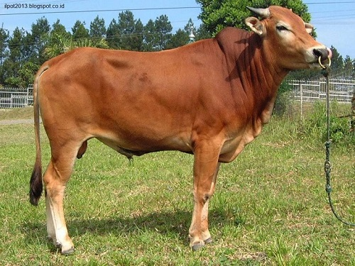
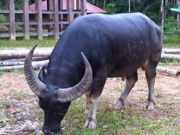

Banteng merupakan hewan mamalia yang masih berkerabat dengan sapi. Hanya saja, banteng termasuk hewan yang dilindungi. Banteng dilindungi karena mereka terancam kepunahan.

Sapi yang memiliki nama Binomial Bos Taurus ini kadang juga disebut sebagai lembu di beberapa daerah di Indonesia. Mereka merupakan hewan bertanduk, dan memamah biak.

Perbedaan kerbau dan banteng bisa dilihat dari penampilannya, tengkorak kepala kerbau lebih kecil dari banteng, dan kerbau suka mandi dikubangan lumpur sedangkan banteng tidak.